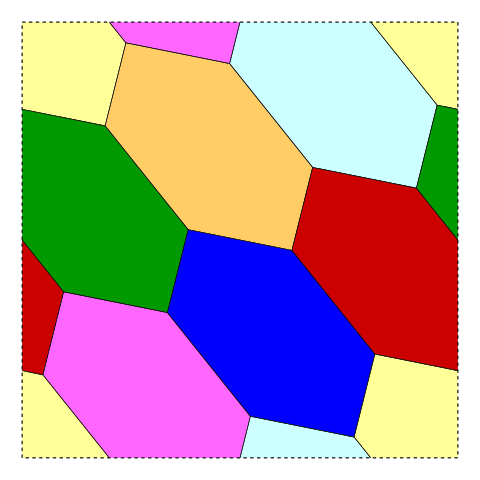

Video of the Heawood graph on a torus
Mike Grady / September 2020
Heawood showed that maps drawn on an orientable surface of genus 1 require at most seven colors [1]. The following map of seven hexagons on a torus was drawn by David Eppstein. The torus is shown unrolled onto a square in the usual representation.

We'd like to take this square image and map it onto a 3D model of a torus. One way to do this easily is to use the PovRay ray tracer. PovRay is a great open source and free ray tracer that can be used for effective 3D mathematical visualization. Spheres, cones, cubes and tori are built in primitives. By using Eppstein's drawing as an image map applied to a torus, we can generate the following video.
Further reading
- Heawood, P. J. (1890). "Map colouring theorems". Quarterly J. Math. Oxford Ser. 24: 322–339.
- Wikipedia, “The Heawood Graph.”
- John Baez, "Visual Insight - Heawood Graph."